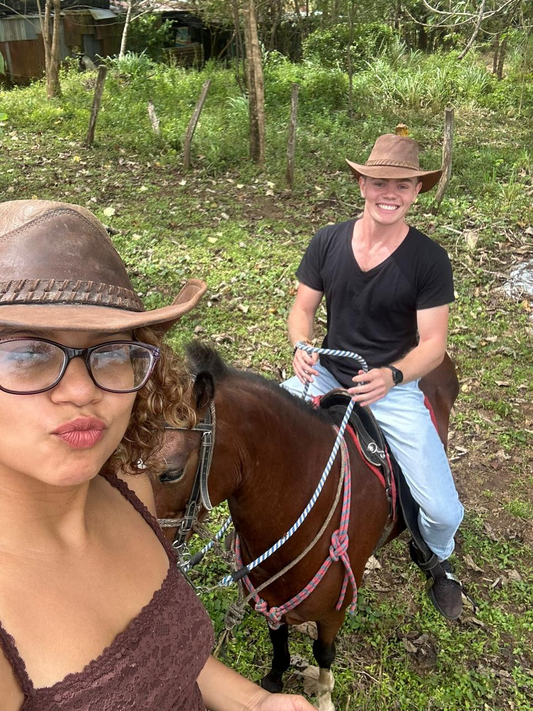
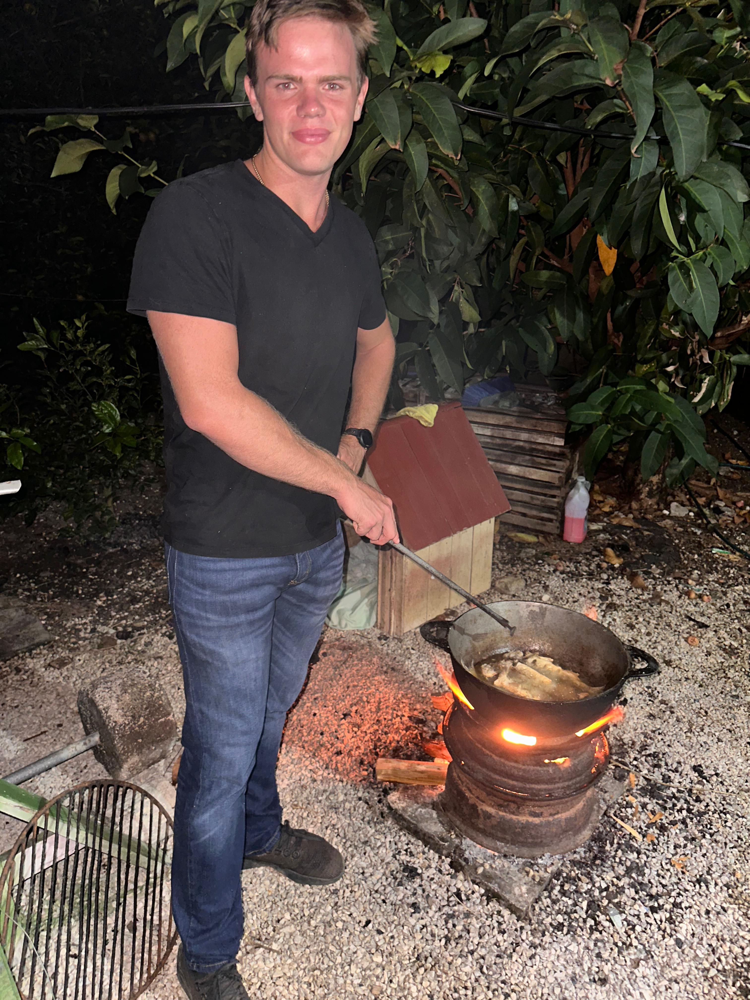
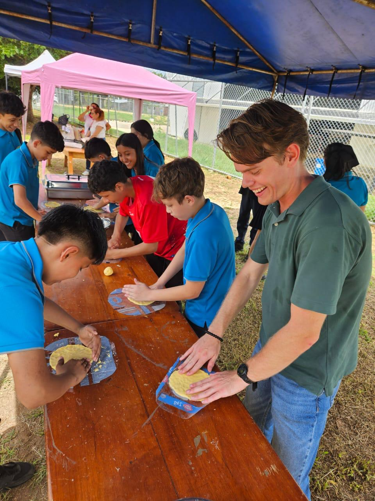
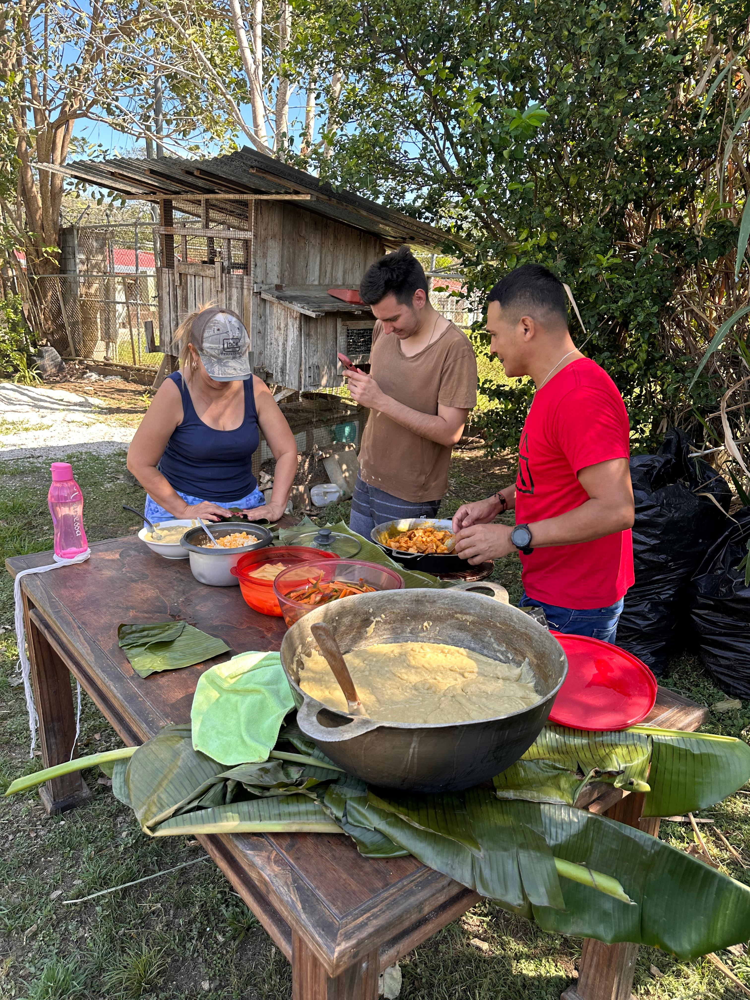
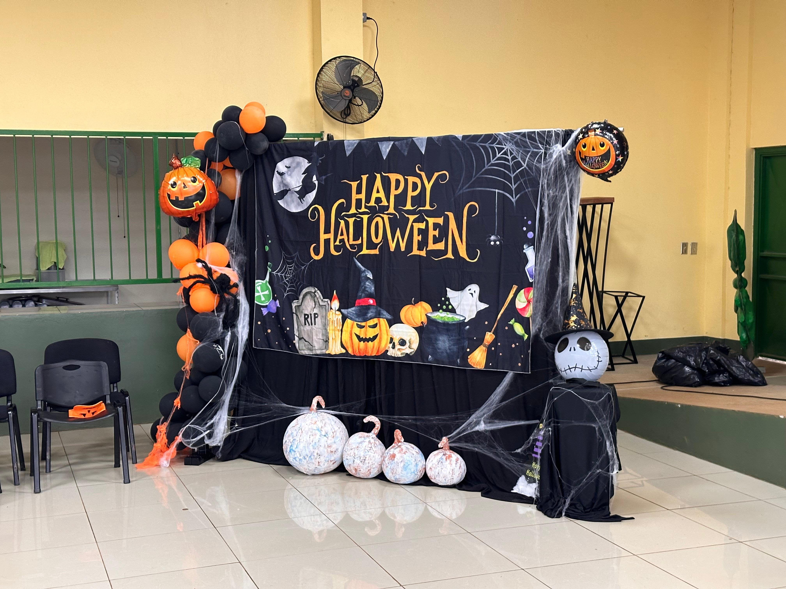

Current Activities
There is something so uniquely profound about being an immigrant in another country and assimilating into a new culture.
It is an experience that has forever changed my life, yet I find myself at a loss for words to fully express it. Instead, I am sharing some of my favorite moments that perfectly capture my journey.

Horseback riding with my friend, Maya, in the pampa of Guanacaste.

Frying freshly-caught fish.

In the midst of a riveting tortilla competition.

A Tico tradition: Christmas tamales

A Halloween festival at the high school.

Friendship in silhouettes.